World of ClaudeCraft · The Farshore
The Last Bell of Gullhaven Concept book: the watch, the island, and the things that come through the breaks.
Every figure here is the shipping model, not a painting of one. Each is built
onto a KayKit Adventurers rig by a deterministic Blender factory
(scripts/assets/last_bell_crew/): a repainted palette atlas, bespoke geometry
rigidly skinned to single bones, and all 22 of the rig's shipped clips carried through
untouched. One material each, so a crew member still costs one draw call. The turnarounds
and pose plates below are renders of those exact GLBs, and every pose is a frame of a clip
the game really plays.
Ferryman Ewald
The Farshore Crossing
The mainland pier, and the Gullhaven berth
- Role
- Not a fighter. The only way onto a besieged island.
- Height
- 2.60 yd
- Triangles
- 8,829
- Clips
- 22
- Materials
- 1 body (one draw) + 1 held
- Base
ranger.glb

He sells nothing and saves lives anyway. Nobody crosses for the fishing any more, so every passenger he lands is someone who chose to come, and he has learned to tell them the one thing that matters before they step off: mind the bell, the town listens to it the way you listen to weather.
The authored detail
The sou'wester. A low oilskin hat with the brim turned down and a long tail at the back, which is the single most legible way to say SAILOR at gameplay distance. Under it the fare tin on a cord, hung where a passenger can reach it without being asked, because Q0 lets you pay or decline and he takes you either way.
-
Oilskin
#4b4a41Waxed cloth, wet for thirty years. Dark, but still cloth. -
Salt canvas
#8a8468Sailcloth bleached pale by the strait. -
Ferry slate
#6c7c96His sim entity colour, worn as the coat's lining. -
Bell bronze
#9c7437The fare tin, and the only bright thing on him.
What they carry
-
spear a
handslot.rA boat gaff, not a spear: he fends off a pier with it and hooks lines aboard.
Design notes
- Built on the ranger body: a moustache and a plain male face, and layered working clothes rather than armour.
- The hat is doing the characterisation. A dark coat alone read as a generic villager; the sou'wester makes him a sailor in one silhouette.
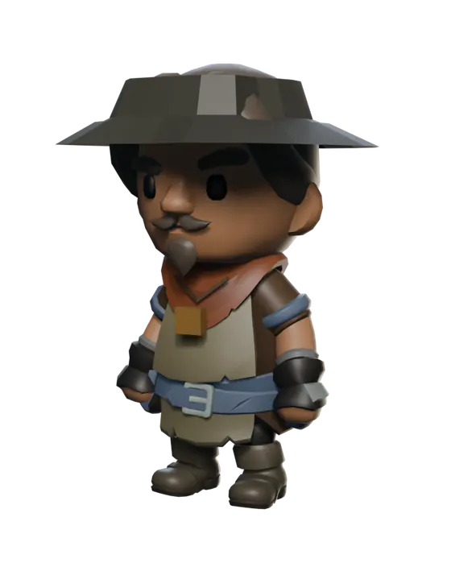
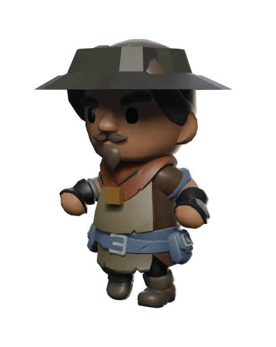
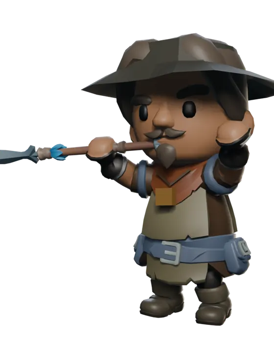
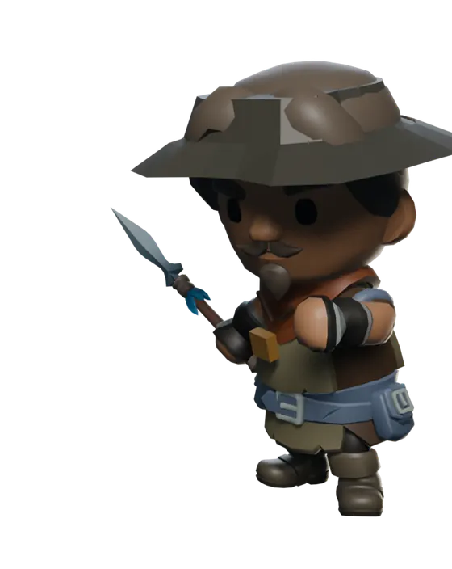
Sergeant Marsh
Town Militia
The militia line, Watch Meadow
- Role
- Holds the road. Knows exactly what his line can and cannot kill.
- Height
- 2.60 yd
- Triangles
- 5,480
- Clips
- 22
- Materials
- 1 body (one draw) + 2 held
- Base
knight.glb
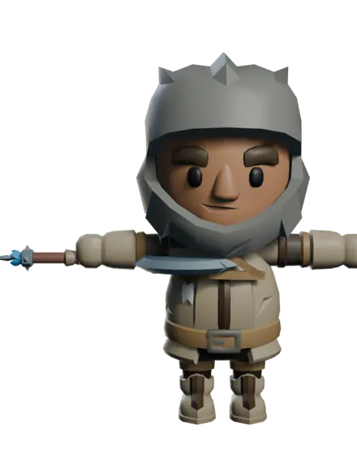
Operational and unsentimental. His line holds the road, and when the rift coughs up something they cannot put down he points at you and says so plainly. He is the measuring stick the campaign uses: what the militia cannot handle is what the squad is for.
The authored detail
Mismatched kit. One good pauldron on his spear arm and nothing on the other, a helm that came off a different man, rope lashings where straps should be. He is what the island's ordinary defenders look like, so that the squad's gear reads as elite without a word of dialogue.
-
Militia iron
#8d9490Cheaper than the squad's, and pitted. -
Drab wool
#6a5a3aHis sim entity colour: town cloth, not livery. -
Rope and hemp
#9c7a4eRepairs made with what the docks had. -
Bell bronze
#9c7437One rank badge. The only issued thing he owns.
What they carry
-
spear a
handslot.rA militia spear: cheap, long, and it holds a road with bodies behind it. -
shield round
handslot.lA round buckler off the town armoury rack, painted and repainted.
Design notes
- Separated from Coalfast at every level, because they share a body and stand two POIs apart: helmed against bare-headed, NO cloak against warden rust, warm brown-grey town iron against cold salt-scoured steel, spear and round buckler against sword and heavy square shield, and one pauldron on the RIGHT against a three-lame stack on the LEFT.
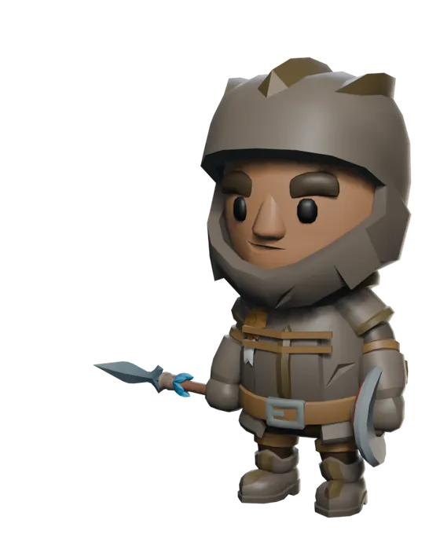
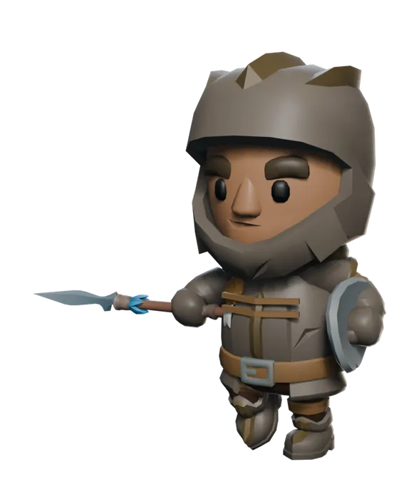
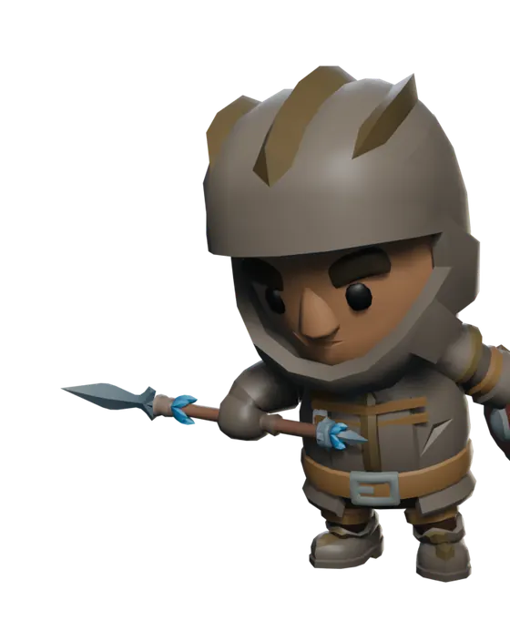
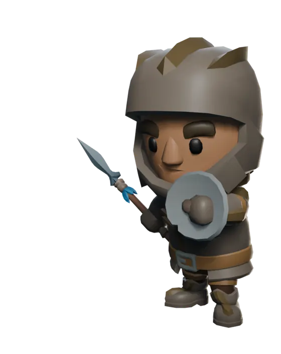
Warden Coalfast
Redoubt Commander
The redoubt, Gullhaven
- Role
- Shield-bearing front line and battlefield commands.
- Height
- 2.60 yd
- Triangles
- 5,486
- Clips
- 22
- Materials
- 1 body (one draw) + 2 held
- Base
knight.glb
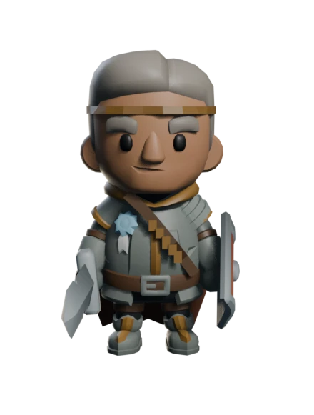
Warm when he has time to be and frighteningly decisive when he does not. He has read Warden Hale's account of the last interior sealing more times than anyone alive, and has privately settled one thing: if the rite must be carried inside, the carrier will be him.
The authored detail
The roll of names. A leather bandolier hung with small bronze name-plates, one for every defender he has lost. It rhymes forward to the plinth of seal-bearers Saul sends you to read in Q7, and to the five name-stones Nell carries to Willowfen after the finale.
-
Salt-scoured iron
#9ba7a3Plate a wet island has been at for years. -
Bell bronze
#9c7437The Vigil's metal: the Bellheart, the bell, Hale's bronze. -
Warden rust
#8a4b2bHis cloak, and literally his sim entity colour. -
Star-glass
#a9dceeThe island's own material, at his throat.
What they carry
-
sword 1handed
handslot.rA warden's arming sword: island-forged, unremarkable, kept sharp. -
shield square
handslot.lThe heavy square shield the front line is built around. He is the line.
Design notes
- Bare-headed at his post: the campaign asks you to love these people, and a face carries that where a bucket helm cannot.
- The bronze band is the warden's office. The crest that goes with it waits for the helm he puts on to go inside.
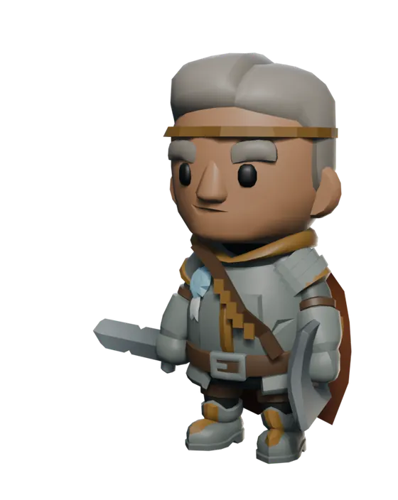
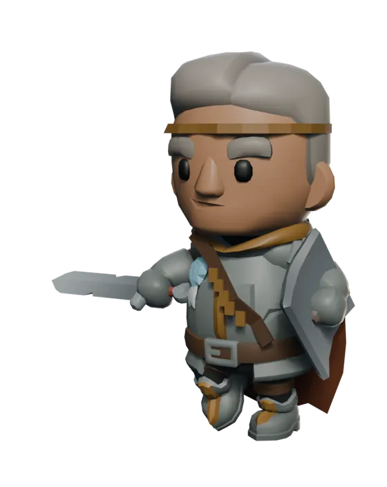
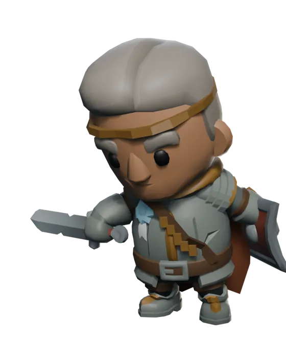
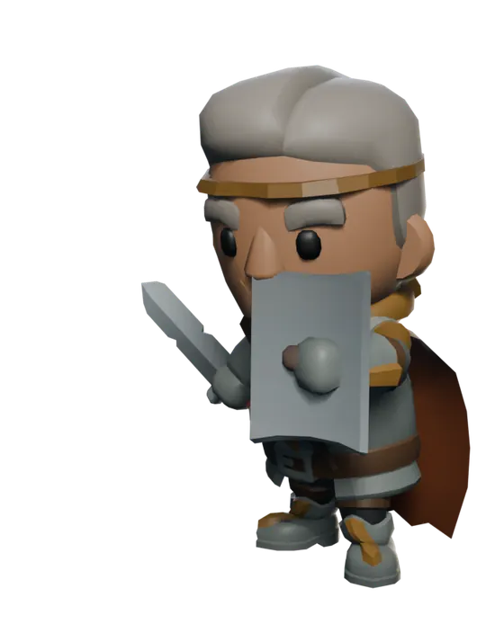
Warden Coalfast, sealed
Redoubt Commander, the breach
Inside the wound
- Role
- The same man, going in.
- Height
- 2.60 yd
- Triangles
- 5,828
- Clips
- 22
- Materials
- 1 body (one draw) + 2 held
- Base
knight.glb
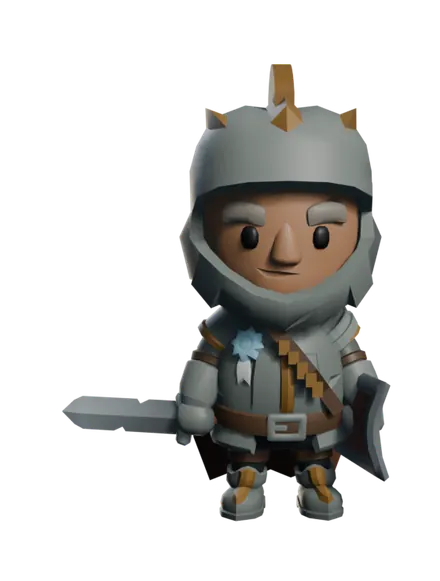
His finale form. The helm goes on to carry the rite inside, and with it the crest: the same fore-and-aft comb the bronze figure on Hale's column wears above the harbour steps. Every warden on this island grew up beneath that silhouette, and he is the next one to wear it.
The authored detail
The crest, and where it comes from. It is not a promotion, it is a quotation: he has read Hale's account more times than anyone alive, and he puts on the same outline knowing exactly how that story ends.
-
Salt-scoured iron
#9ba7a3The same harness, now closed. -
Bell bronze
#9c7437The crest, cast like the memorial's. -
Warden rust
#8a4b2bThe cloak he does not come home in. -
Star-glass
#a9dceeThe badge that will be one of five anchors.
What they carry
-
sword 1handed
handslot.rThe same sword. Nothing about the last hour is newly equipped. -
shield square
handslot.lThe shield he holds the wound shut behind.
Design notes
- One asset, two forms: the same body, atlas and clips, so the helm going on costs a swapped visual key and nothing else.
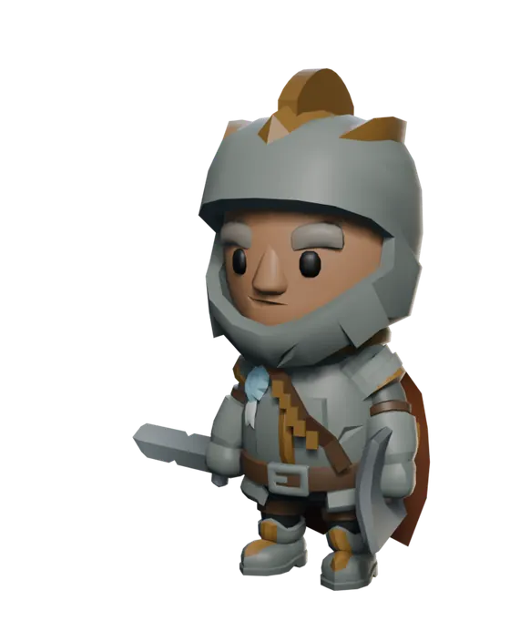
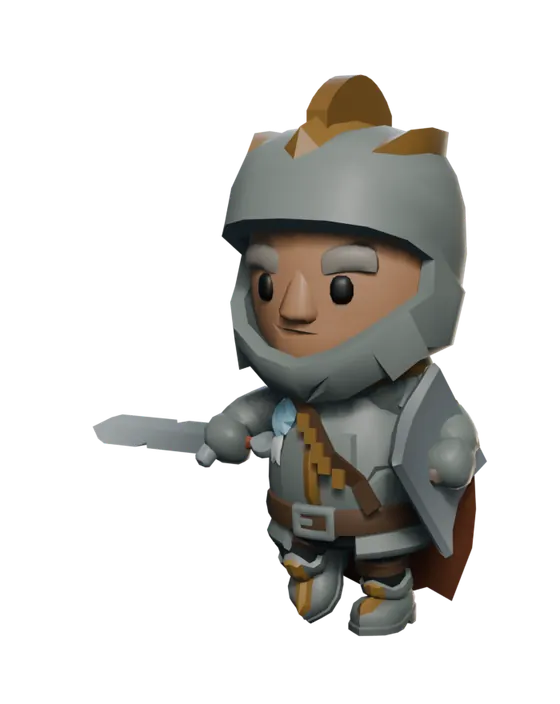
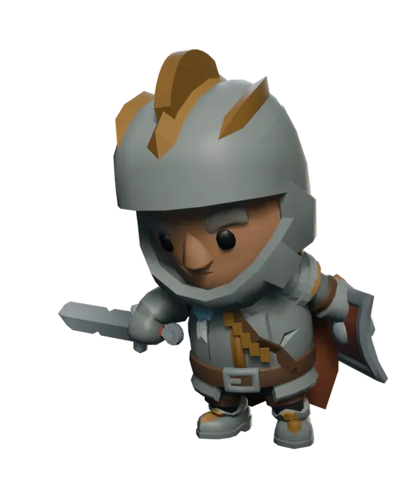
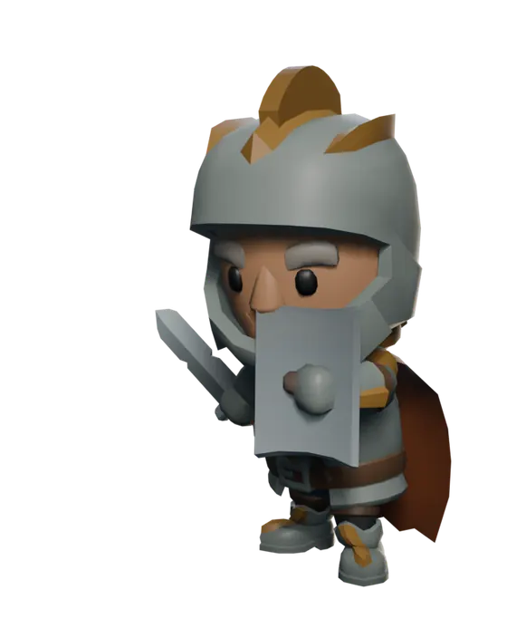
Riftwatch Ollun
Breach Scholar
The signal-fire vigil, Watch Meadow
- Role
- Interrupts Rift effects and reads the changing anchor pattern.
- Height
- 2.60 yd
- Triangles
- 6,424
- Clips
- 22
- Materials
- 1 body (one draw) + 2 held
- Base
mage.glb
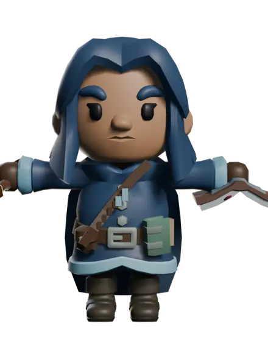
He can hear a breach change before it becomes visible, and he reads one the way a physician reads a chest. He designs the outer seal and genuinely hopes it will work; his calculations cannot prove that it will. Across the whole campaign he is the only squad member who never describes his own future.
The authored detail
The instrument bandolier, and its empty loops. He gives his possessions away as the arc runs, so the strap that should hold a full set of star-glass instruments is missing more of them every time you see him. The gaps are the character: he suspected first, and said nothing, because hope was also a calculation.
-
Riftwatch slate
#3f5f8aHis sim entity colour, worn as the robe. -
Star-glass
#a9dceeInstruments, and what the seal is made of. -
Old paper
#e4d9c0The record that outlives him and reaches the Old Beacon. -
Bell bronze
#9c7437Instrument fittings, calibrated against the bell.
What they carry
-
brasscrown walking staff
handslot.rA measuring staff he walks the Riftfields with, marked off in bell-lengths. -
journal open
handslot.lHis record. It survives all five of them and travels to the parent order.
Design notes
- Hooded, and for a reason: the KayKit mage body wears long loose hair, which read as a woman at a glance. A hood settles it without touching the shipped head, and a man who keeps the signal-fire vigil in Farshore weather owns one. His hair is dark; nothing in the spec makes him old.
- No wizard hat. He is an instrument-keeper and a record-keeper, not a spellcaster, and the silhouette should not promise magic.
- The empty loops are authored asymmetrically, so the eye reads them as absence rather than as a pattern.
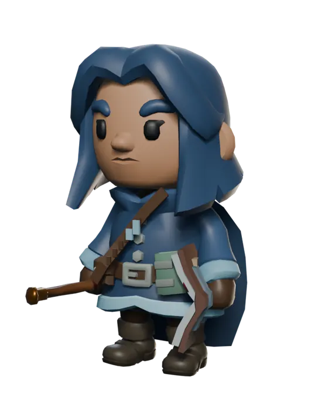
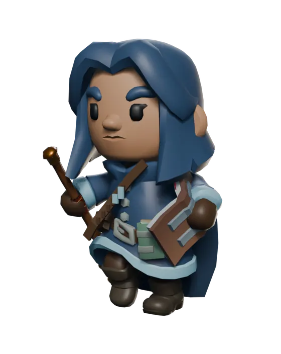
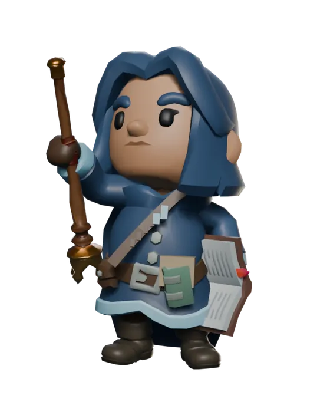
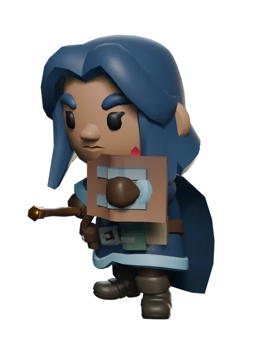
Quartermaster Edda
Redoubt Armorer
The forge, Gullhaven redoubt
- Role
- Heavy ranged damage, demolitions and charge placement.
- Height
- 2.60 yd
- Triangles
- 7,630
- Clips
- 22
- Materials
- 1 body (one draw) + 2 held
- Base
rogue.glb
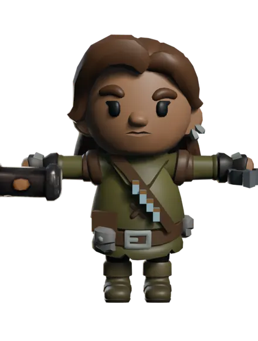
She repairs the same battered equipment so often that she treats it like part of the family, and she names her machines. Abrasive, practical, and very funny when afraid: the more frightened she is, the funnier she gets. She voted to call the mainland for relief, and in Q6 it is her hand that puts the flare up.
The authored detail
The charge rack. Star-glass charges she built herself, racked across her chest where she can reach them without looking. She stays at the charge station at the end for the reason she always gives, that only she can arm it, and never for the reason everyone else can see.
-
Forge olive
#6b6b3aHer sim entity colour: workshop canvas, not livery. -
Soot
#2a2724Hands, forearms and hem. It does not wash out. -
Star-glass
#a9dceeThe charges, ground and set by her own hand. -
Bell bronze
#9c7437Fittings, and the bell she helps reforge.
What they carry
-
iron field hammer
handslot.rThe field hammer she rebuilds the redoubt's kit with. It has a name. -
tongs
handslot.lForge tongs: how star-glass gets handled by someone who intends to keep her fingers.
Design notes
- Soot is painted UP the forearms and DOWN the hem, the two places a forge actually marks, rather than as an even grime pass.
- Her tools read as maintained, not worn out. She is the reason the squad's gear outperforms the militia's.
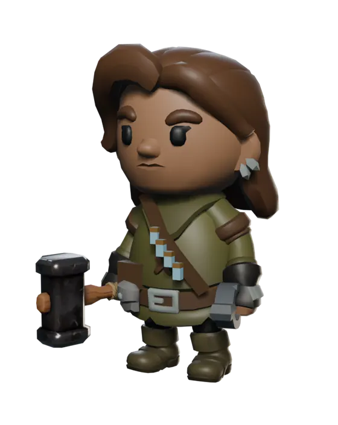
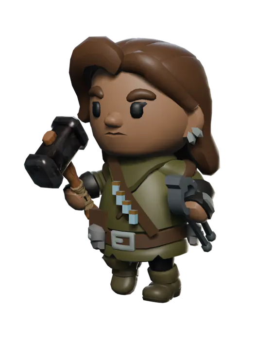
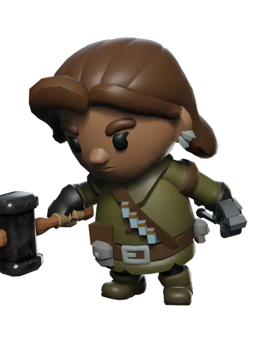
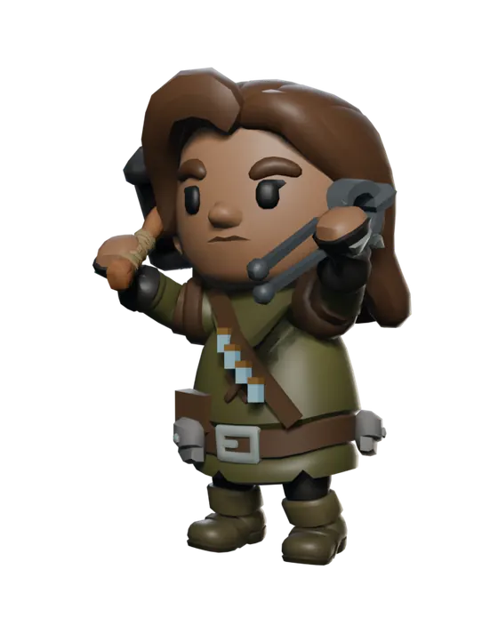
Mender Saul
Field Surgeon
The wounded, Gullhaven redoubt
- Role
- Healing, cleansing dream-corruption, keeping the anchor holders alive.
- Height
- 2.60 yd
- Triangles
- 4,121
- Clips
- 28
- Materials
- 1 body (one draw) + 2 held
- Base
mage_classic.glb
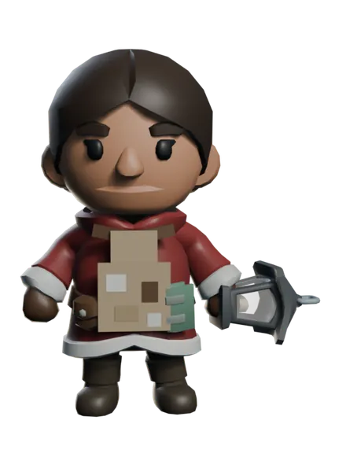
Gentle, exhausted, and harder to frighten than any of them. He made peace with the precedent before anyone else did, and he is the one who makes sure the newcomer understands the histories before the histories happen to them: it is Saul who sends you to read the statue's plinth.
The authored detail
The mended apron. Every patch on it is stitched the way he ties a bandage, in the same over-and-back he has used on a thousand people, because he mends his own kit with the only hands he has. He treats every patient by name and has never once mentioned his own.
-
Mender's red
#9a3b3bHis sim entity colour. It hides what the work leaves. -
Bandage linen
#dfe3e2Clean, and rationed, and always the newest thing on him. -
Worn leather
#63482fAn instrument roll older than most of the militia. -
Star-glass
#a9dceeWhat cleanses dream-corruption, and all he has of it.
What they carry
-
lantern
handslot.lHe works among the wounded at night. The lantern is how they find him.
Design notes
- Built on mage_classic, not the mage body: it carries a short dark cut and a plain male face where the mage body's long hair read as a woman. Same palette cells, same bone names, so the recipe is unchanged.
- Exhausted, not old. His hair stays dark; the tiredness is in the kit.
- The only figure whose authored detail is REPAIR rather than equipment. Everything about him is something kept working past its life.
- Lantern in the off hand, nothing in the main. He is the one person on the island whose hands are the tools.
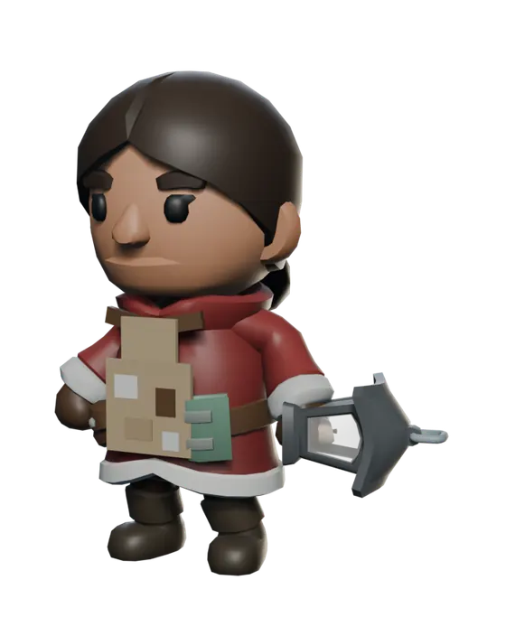
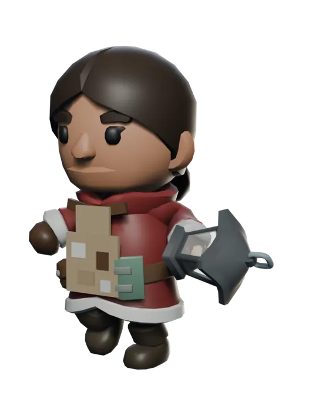
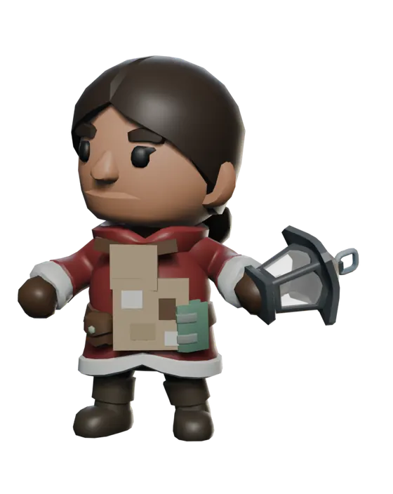
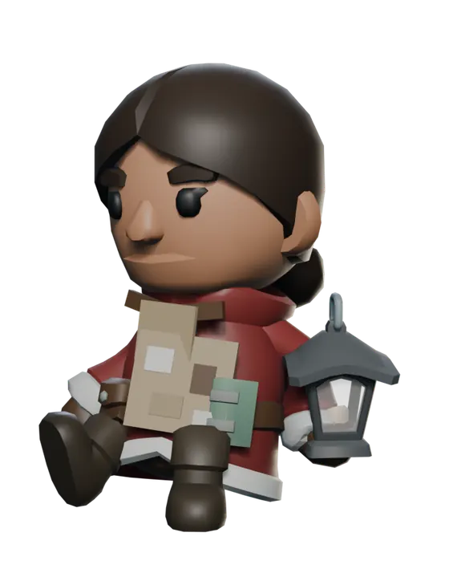
Bellkeeper Tam
Watchbell Keeper
The watchbell brazier, the Landing
- Role
- Protective wards, crowd control, and the Bellheart's counter-note.
- Height
- 2.60 yd
- Triangles
- 6,269
- Clips
- 22
- Materials
- 1 body (one draw)
- Base
barbarian.glb
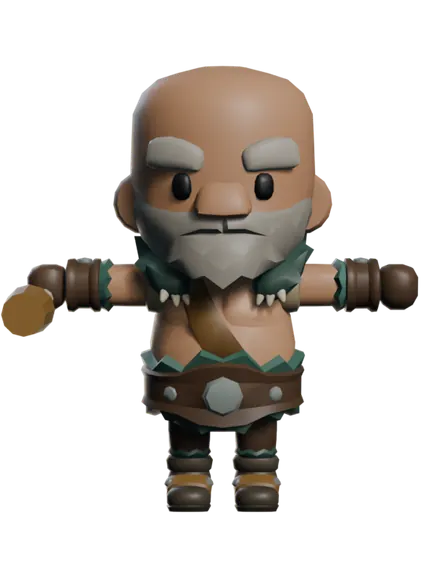
Coalfast's oldest friend, and the only person who can reliably read and answer the Bellheart's changing tone. He uses humour to keep fear from becoming the most important person in the room, claims not to believe in the old Vigil rites, and knows every word of them. His silence is the alarm.
The authored detail
The bell-striker, worn pale where his hand goes. It is the one object the campaign hands you afterwards as a keepsake, so it has to be recognisably HIS before you ever receive it: bronze head, leather haft, and sixty years of grip polished into the same four inches.
-
Watch teal
#4a7b6bHis sim entity colour: the bell-keeper's coat. -
Bell bronze
#9c7437More of it on him than on anyone. He is the bell's man. -
Grip pale
#9c7a4eWhere the striker's leather has gone the colour of bone. -
Weathered
#d3a07aForty years of standing at the causeway's end.
Design notes
- Built on the barbarian body for breadth, with the bear hat dropped. He is an old soldier's shape, not a warden's.
- The striker is bespoke geometry rather than a stock weapon, because no shipped model reads as a bell-striker and the keepsake has to match.
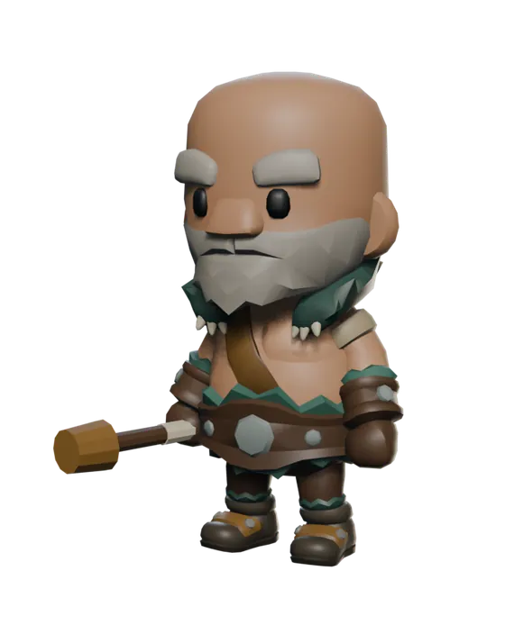
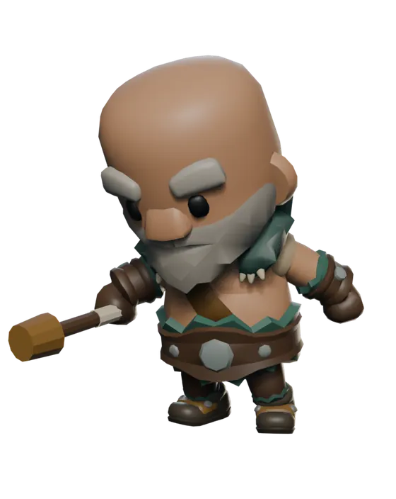
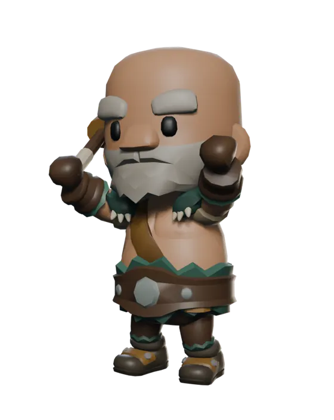
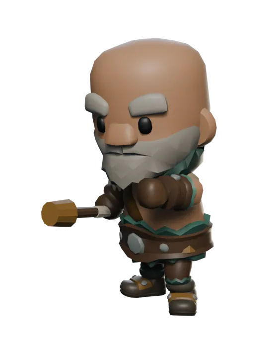
Nell
Bell-runner
Between the posts and the tower
- Role
- Carries messages. Not part of the final expedition, and survives it.
- Height
- 2.25 yd
- Triangles
- 7,758
- Clips
- 22
- Materials
- 1 body (one draw)
- Base
rogue.glb
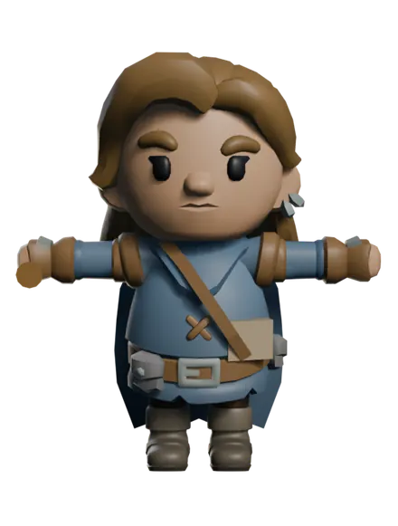
Bren's daughter. Her father's death is weeks old, she is terrified of the work, and she does it anyway: her courage is not the absence of fear, it is returning to the shore in spite of it. She helps evacuate Gullhaven, takes over the bell post afterwards, and is the person who later asks you to carry five name-stones to Willowfen.
The authored detail
The tally cord. A knotted line at her hip, one knot for every run she has made since her father died, because counting them is how she keeps going back. It is the only piece of characterisation in the book that is a number.
-
Runner's blue
#6e8ca8Her sim entity colour, and the lightest cloth on the island. -
Salt canvas
#bfae8eA satchel cut down from something of her father's. -
Bell bronze
#9c7437The hand-bell. Small, and the loudest thing she owns. -
Rope
#9c7a4eThe tally cord, and the knots in it.
Design notes
- Shorter than every adult on the island (2.25 against 2.6). The scale chart is doing characterisation work here, not just documentation.
- No armour and no weapon. She is the only figure in the campaign whose job is to be somewhere else, fast.
- On the rogue body, not the ranger's: the ranger carries a moustache (it went to Ewald) and its quiver reads as a hunter, which is exactly what she is not. Youngest skin and hair in the book.
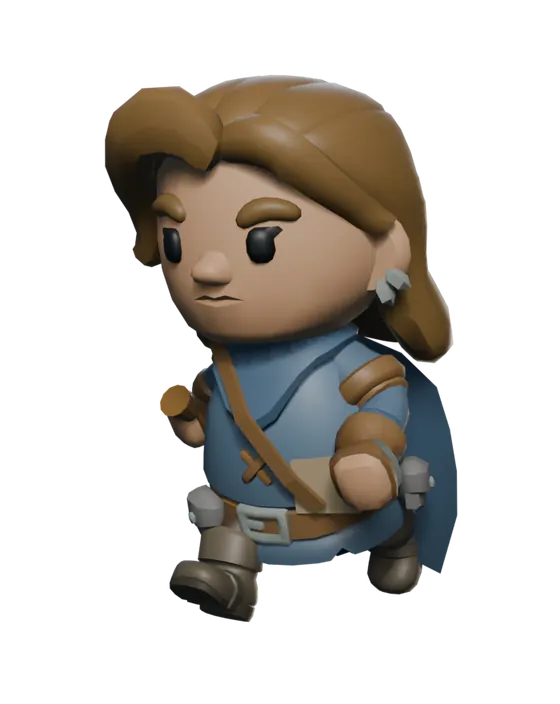
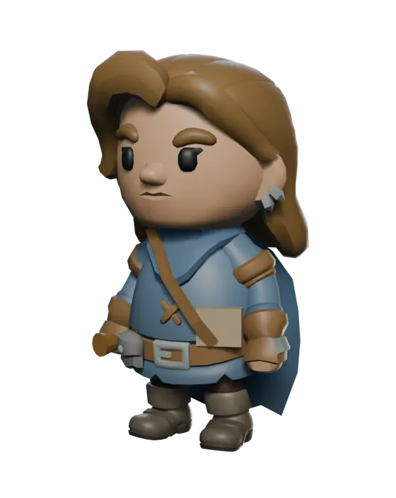
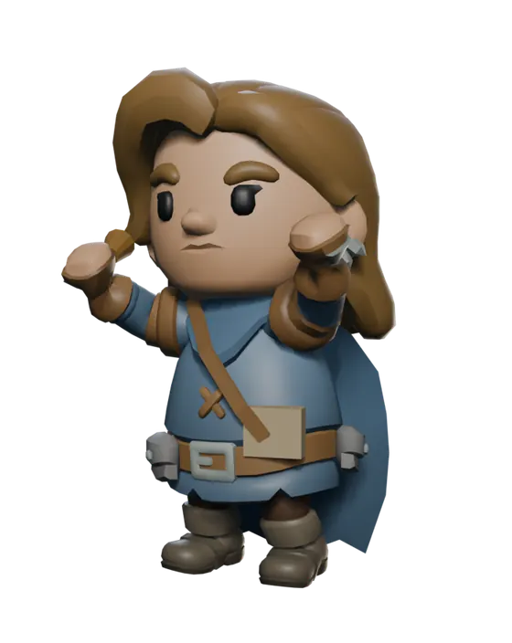
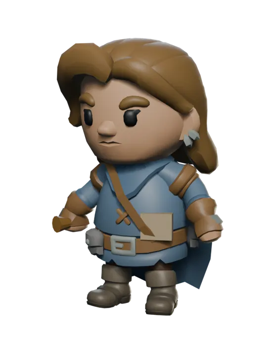
Riftspawn
Break-spawned
The island's fringe
- Role
- The common spill. Knows only the way it came and the thing in front of it.
- Height
- 1.78 yd
- Triangles
- 5,318
- Clips
- 31
- Materials
- 2 body
- Base
skeleton_minion.glb- Family
- demon
- Levels
- 3 to 4
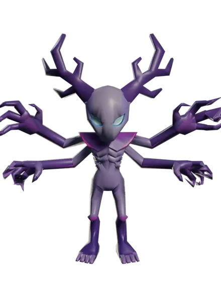
Whatever a rift is, it does not spill fishermen. Riftspawn are what already made it through and now roam away from the redoubt, and they are the twelve you kill in Q0 while the militia watches.
The authored detail
Star-glass breaking out through the ribs. The island's own material, coming back through the wound wrong, and the mark every break-spawned thing in this book shares.
-
Void bone
#c9bedcA frame bleached violet-grey by the wound. -
Void violet
#7a3fb0Its sim entity colour, worn as the torn wrap. -
Star-glass
#a9dceeGrown through the ribs. It should not be there.
Design notes
- Rebuilt off the KayKit skeleton body. The Quaternius demon it used to fall back on is a flat untextured blob at this size, and a cartoon devil says nothing about what a rift is.
- A body that is not finished being a body is the right read for 'unfinished rooms pressing into the waking world'.
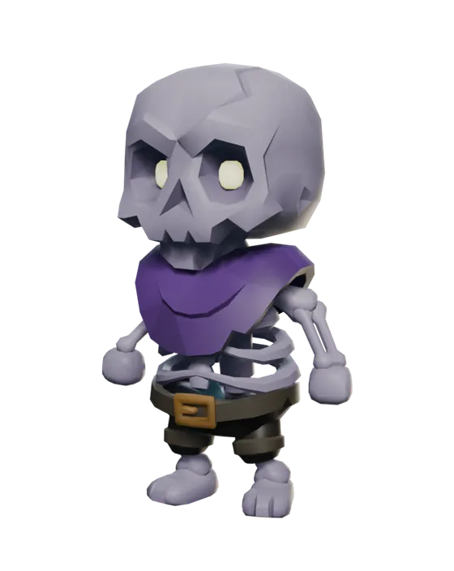
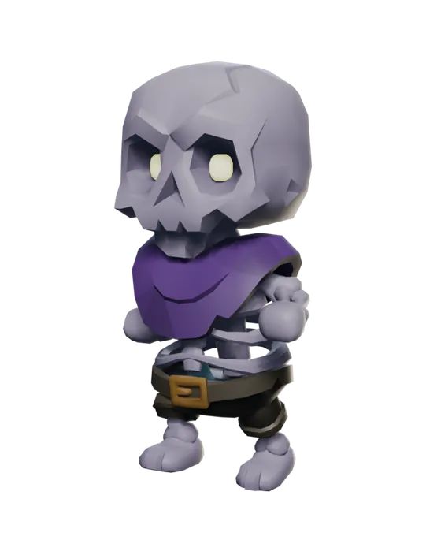
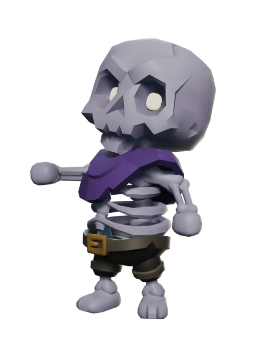
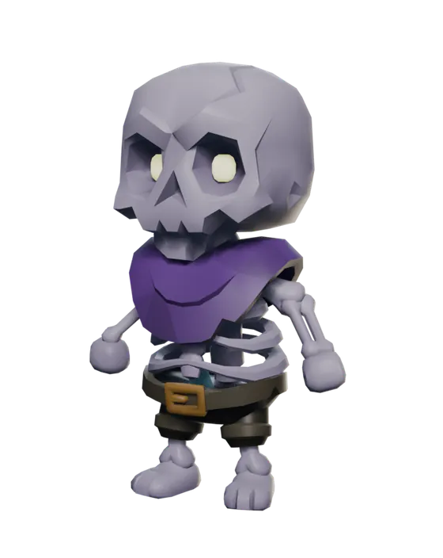
Breach Wretch
Break-spawned
The island's fringe
- Role
- The small ones come in numbers, and they come fast.
- Height
- 1.89 yd
- Triangles
- 4,722
- Clips
- 25
- Materials
- 2 body
- Base
skeleton_rogue.glb- Family
- kobold
- Levels
- 3 to 5
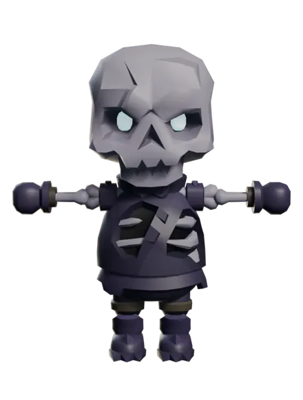
Wretches are the pressure the redoubt lives under between the big nights: quick, many, and willing. They carry the breakscarred steel Edda asks you to bring back.
The authored detail
A low, quick, hooded silhouette. Nothing about one of them is frightening, which is exactly the point: they are the pressure the redoubt lives under between the big nights.
-
Void bone
#bfb6c8The same bleached frame, smaller. -
Bruise violet
#5a4a78Its sim entity colour, worn as the hood. -
Star-glass
#a9dceeThree small shards. It has not been through as much.
Design notes
- Rebuilt off the KayKit skeleton rogue: hooded and low, so a pack of them reads as a crowd rather than as five copies of one threat. The flat Quaternius goblin it replaced read as neither.
Void Stalker
Break-spawned
The edge of the watchfires
- Role
- Hunts the edges of the light the watchfires throw.
- Height
- 1.84 yd
- Triangles
- 2,858
- Clips
- 14
- Materials
- 1 body (one draw)
- Base
wolf_basic.glb- Family
- beast
- Levels
- 5 to 6
The reason the island keeps its fires burning at the perimeter rather than the centre. It does not test a lit line; it waits for one to gutter.
The authored detail
That it chooses where to hunt. It does not test a lit line; it waits for one to gutter, which is why the island keeps its fires at the perimeter rather than the centre.
-
Starless
#2f2a44Its sim entity colour, applied the way the renderer applies it. -
Wolf coat
#8c8270The baked texture underneath, kept and darkened.
Design notes
- Kept on the wolf body: it is the only quadruped in the kit that holds up at this size, and a stalker needs four legs. Re-coloured exactly the way `tintedMaterial` does it at runtime, so the plate matches the game.
- OPEN: star-glass dorsal shards were built and CUT. At every offset tried they read as pale ice spikes standing off the back rather than glass grown through it. The tint alone already carries it, so the mark it shares with the skeleton spawn is missing here, and that is a follow-up.
The Tidemill Stalker
Q0 boss, elite
The Tidemill, Watch Meadow
- Role
- Demonstrates the gap between the player and the militia.
- Height
- 2.10 yd
- Triangles
- 2,712
- Clips
- 5
- Materials
- 2 body
- Base
spider.glb- Family
- beast
- Levels
- 5, fixed
It dug into the mill and it is wearing the miller's roof. This is the first thing on the island the militia cannot put down, which is the whole job of the fight: Marsh points at you, nothing follows you in, and the kill is yours alone. Coalfast recruits you off the back of it.
The authored detail
The roof it should be wearing. The campaign says it dug into the mill and came out carrying the miller's roof, and that is what this boss ought to look like.
-
Mill moss
#3a4a2fThe sim entity colour, applied as a runtime tint. -
Tidemill slate
#5c6470Roof it has not shed.
Design notes
- Mapped onto the spider body rather than the beast family's wolf: the encounter reads through burrowing and webbed exits, and a wolf silhouette promises neither.
- OPEN: the carried mill roof is NOT modelled. Slate courses were prototyped and cut. The spider is a compact thorax under a wide leg span, and every seating of the slate read as a floating shelf rather than carried wreckage. Shipping a plate that misrepresents the model is worse than naming the gap, so it carries star-glass for now and the roof is a follow-up, not a delivery.
The Sundered Horror
World elite
The Sundered Cliffs
- Role
- The biggest thing the cliffs' break ever let through.
- Height
- 4.06 yd
- Triangles
- 5,858
- Clips
- 8
- Materials
- 2 body
- Base
skeleton_golem.glb- Family
- ogre
- Levels
- 7, fixed
The island's high-water mark for what a break can deliver, and the only figure in this book that stands taller than a person. Everything the squad says about this year being the worst in living memory is measured against things like this arriving more often.
The authored detail
Scale, and what has grown through it. Four yards tall, with star-glass driven right through the shoulders: walking evidence that this year is the worst in living memory.
-
Wound magenta
#8a2f6aIts sim entity colour, staining the plate. -
Cold stone
#7c6a74A construct's plate, not a creature's hide. -
Star-glass
#a9dceeSix shards, the most of anything in the book.
Design notes
- Rebuilt off the KayKit skeleton golem: armoured, heavy, and the only figure here that stands taller than a person. The flat Quaternius giant it replaced was a mauve blob with none of that weight.
Scale
Every figure against the player's eye line
Runtime height in yards, the number VisualDef.height normalises each rig to